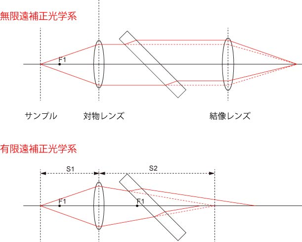

では，無限遠のクォリティからみたメリットはどこにあるのでしょう？
ここで，ダイクロイックミラーを挿入した場合を考えてみましょう．
蛍光顕微鏡においては，ダイクロイックミラーなどの，４５度，の角度で挿入するミラーを多用します．
その場合の光の軌跡を追ってみましょう．

無限遠の場合には，対物レンズからの光は平行光なので，光の軌跡は若干平行移動しますが，結像レンズにおいて，元の位置に正しく集光します．
しかし，有限遠の場合には，元の位置に集光せず，さらにおのおのの光の集光点はずれてしまいます．
つまり，有限遠の場合，間に角度を持った光学系を挿入すると，拡大率が変化し，結像性能が悪くなる，のです．
無限遠の場合，このような悪影響をほとんど生じさせません．
さらに，ミラー，フィルターなどの内部反射によるゴーストにも無限遠は強いので，高い結像性能を有します．
もちろん，ダイクロなどの角度を持った光学系の話であって，それら光学系を必要としない，位相差，明視野，などでは有限遠でもクォリティは変わりません．
この無限遠光学系を作り出すには，
専用の対物レンズ
専用の顕微鏡
が必要となってきています．
現在市販されている顕微鏡はほとんどがこの無限遠系です．
確か，最初にこの無限遠光学系を発売したのが，Ｚｅｉｓｓだと思います．
遅れて，日本のメーカーが無限遠光学系に置き換わってきたと記憶しています．
では，もし，無限遠光学系の顕微鏡に有限遠の対物レンズ（もしくはその逆）を使ったらどうなるのでしょう？
顕微鏡として成立しない？
そうではありません．
若干フォーカスをずらしたり，ＣＣＤの位置をずらしたりすれば，像を観察することは可能です．
しかし，収差や倍率の問題は本来の性能よりも悪くなることは覚悟しなくてはなりません．
このようなことをきちんと押さえて，顕微鏡を使っていきたいですね．